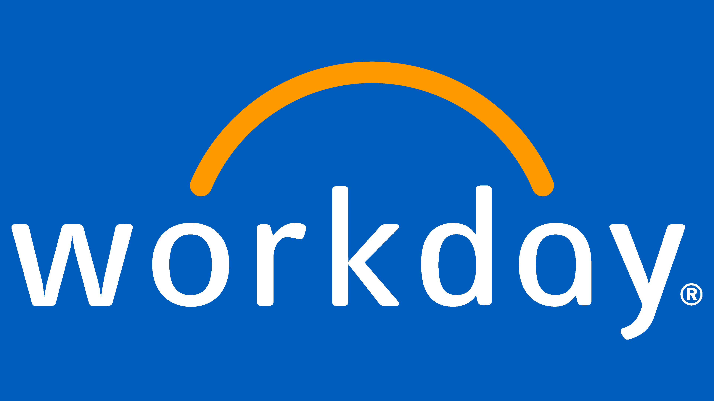
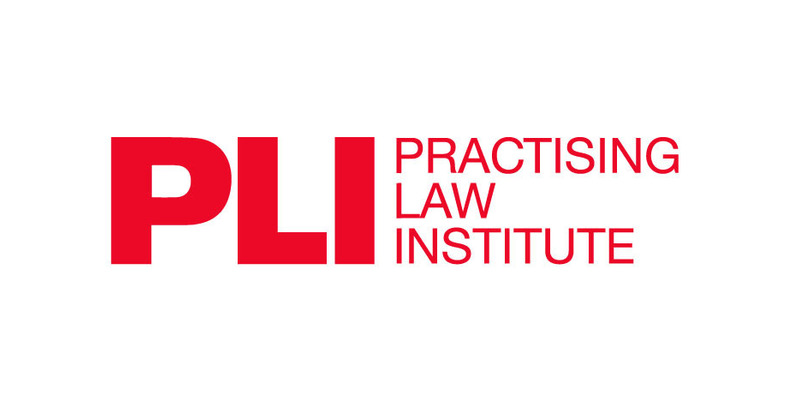
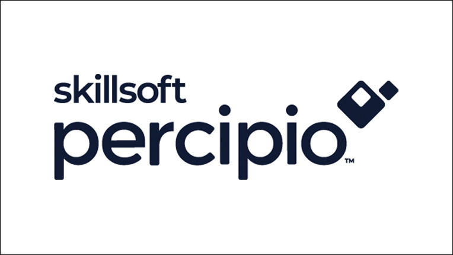
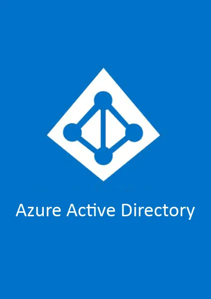
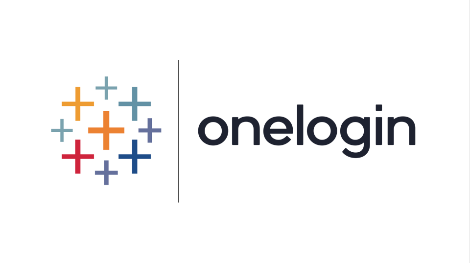
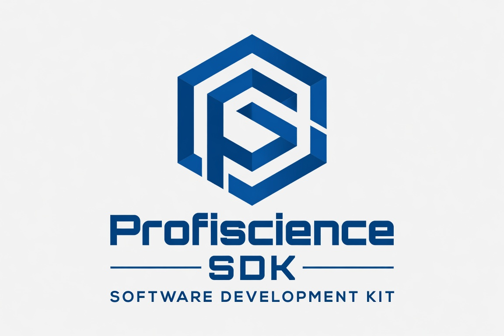

Every integration, at a glance.
From live training delivery to CLE content libraries and identity management — UniversitySite connects to the platforms your firm already runs.
Zoom
Create and manage Zoom meetings without leaving UniversitySite. Sessions start on time, every time.
Microsoft Teams
Create and manage Teams meetings directly from UniversitySite — no context-switching required.
Cisco Webex
Manage Webex trainings from inside UniversitySite. Empower instructors to run sessions more efficiently.
 Calendar
Calendar
Microsoft 365
Training events sync to Outlook calendar so attendees always have the right time and join link.

HRISWorkday
Employee sync, roles, and org structure keep UniversitySite rosters current automatically.
LinkedIn Learning
Leverage LinkedIn's 9,000+ course library inside UniversitySite for technical, soft skills, and PD.

CLE ContentPracticing Law Institute
PLI's live seminars, webcasts, and on-demand programs surfaced directly inside UniversitySite.
NBI & IPE
State-specific live online seminars and OnDemand CLE videos from NBI, integrated into UniversitySite.
 CLE Content
CLE Content
Cerifi LegalEdge
Engaging, practical CLE content from Cerifi's expansive catalog — accessible inside UniversitySite.

ContentSkillsoft Percipio
Leverage Skillsoft's broader learning catalog alongside your firm's own content in one place.
West LegalEd
Thomson Reuters CLE content library, accessible through UniversitySite.
ScormFly
Convert media files to SCORM-compliant format for tracking. Includes video streaming and closed captioning.
CLESite
Track CLE obligations, deadlines, certificates, and jurisdictional status in the same ecosystem as UniversitySite.
AI Knowledge Check
Upload a course video and AI drafts a full knowledge check — ready for SME review in under 60 seconds.
SAML-based Single Sign-On
SAML is an open standard for exchanging authentication and authorization data between identity providers and service providers.
Okta
SAML-compatible identity provider — works with the UniversitySite SAML SSO Extension.

SAML SSOAzure Active Directory
SAML-compatible identity provider — works with the UniversitySite SAML SSO Extension.

SAML SSOOneLogin
SAML-compatible identity provider — works with the UniversitySite SAML SSO Extension.

DeveloperSDK Extension
Embed UniversitySite modules inside your employee portal or intranet using the Profiscience SDK.
SQL Reporting
Direct SQL database access for custom reports. Data syncs from UniversitySite twice per day.